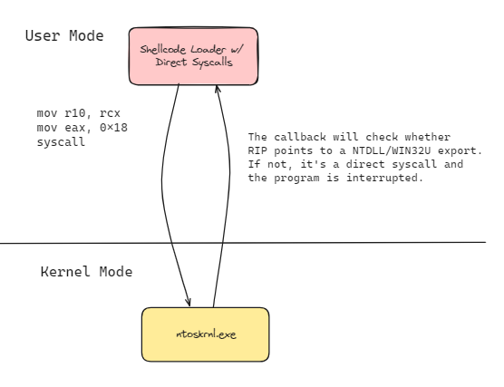
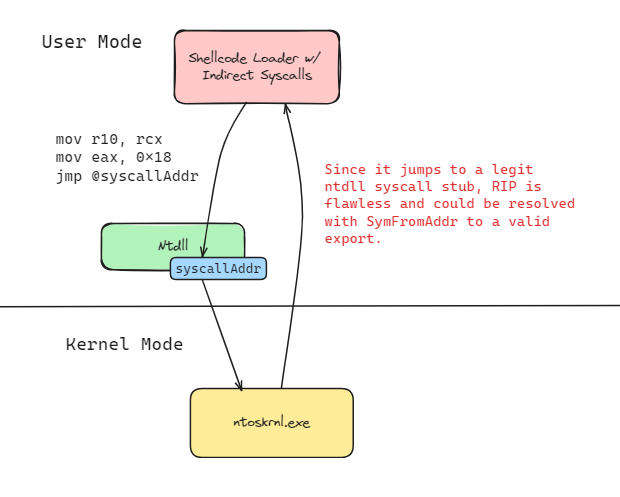
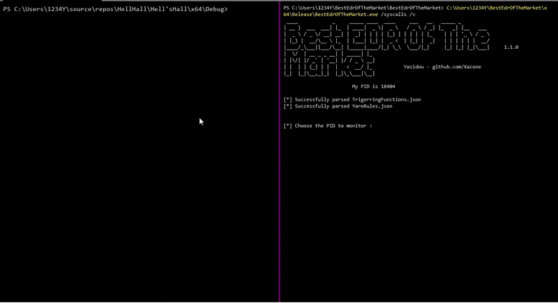

Context
Been a little overwhelmed by school work & exams for the last weeks, since it is now over, i went back working on the next BestEdrOfTheMarket's release. I never thought a simply little thing like this would be so appreciated that's so why im planning to put more defensive methods over time & let people have fun with it.Last weekend I thought of a cool method for detecting potential indirect/illegitimate syscalls by leveraging Vectored Exception Handlers (VEH), hardware breakpoints & stack pointers, and decided to get up to put some effort into it and implement it in BEOTM.
We'll be targetting Hell's Hall from @Maldev-Academy, a shellcode loader which combine Indirect Syscalls & Hell's Gate.
That is just a funny proof of concept that i though of in a week-end which is certainly improvable and surely faillibe if some work is put on, so not to be taken tooooo seriously 🤡.
Catching Direct Syscalls w/ Instrumentation Callbacks
The following method, which has been implemented by @wintrnl and which I won't explain any better than him, consists in defining an instrumentation callback withNtSetInformationProcess so as to invoke a predefined routine for each return from the kernel to user mode.
It is a nice trick for catching illegitimate syscalls since we could easily intercept RIP and apply a sanity check for, either by checking whether a symbol can be resolved from it or by holding a list of export addresses and checking whether RIP is included between each
legitAddress and legitAddress+0x14 within that list.

The Problem when Indirect Syscalls
Indirect syscalls consist in locating a syscall instruction within ntdll and jumping to it once the stub is made and the SSN value pushed intoRAX, this way, once intercepted RIP is clean as it emanates from a legitimate ret within ntdll.

The Magic Trick 🧙
Let me hold for a second what Hell's Hall is doing then fire up a debugger :HellHall/Hell'sHall/Hell'sHall/AsmHell.asm
public HellHall
HellHall proc
mov r10, rcx
mov eax, dwSSN
jmp qword ptr [qAddr] ; JUMPING TO A ADDRESS WHERE WE HAVE `syscall` INSTRUCTION - SO THAT IT LOOKS LEGIT
ret
HellHall endp
end
It cooks the value of the SSN then jumps to the syscall address that it has previously calculated, as intended. Note that the way the SSN is retrieved does not have any effect on that trick whether it's Hell's, Tartarus or even Obama Gate.
// We're before the jump
0:000> p
Hell_sHall!HellHall+0x9:
00007ff7`5c6e2577 ff25d7bb0000 jmp qword ptr [Hell_sHall!qAddr (00007ff7`5c6ee154)] ds:00007ff7`5c6ee154=00007ffdf800f672
0:000> k
# Child-SP RetAddr Call Site
00 000000ea`628ff768 00007ff7`5c6e224e Hell_sHall!HellHall+0x9
01 000000ea`628ff770 00007ff7`5c6e2e79 Hell_sHall!main+0xee
02 000000ea`628ff950 00007ff7`5c6e2d1e Hell_sHall!invoke_main+0x39
03 000000ea`628ff9a0 00007ff7`5c6e2bde Hell_sHall!__scrt_common_main_seh+0x12e
04 000000ea`628ffa10 00007ff7`5c6e2f0e Hell_sHall!__scrt_common_main+0xe
05 000000ea`628ffa40 00007ffd`f628257d Hell_sHall!mainCRTStartup+0xe
06 000000ea`628ffa70 00007ffd`f7fcaa58 KERNEL32!BaseThreadInitThunk+0x1d
07 000000ea`628ffaa0 00000000`00000000 ntdll!RtlUserThreadStart+0x28
0:000> p
ntdll!NtAllocateVirtualMemory+0x12:
00007ffd`f800f672 0f05 syscall
// We're after the jump, in the NtAllocateVirtualMemory stub
0:000> k
# Child-SP RetAddr Call Site
00 000000ea`628ff768 00007ff7`5c6e224e ntdll!NtAllocateVirtualMemory+0x1201 000000ea`628ff770 00007ff7`5c6e2e79 Hell_sHall!main+0xee
02 000000ea`628ff950 00007ff7`5c6e2d1e Hell_sHall!invoke_main+0x39
03 000000ea`628ff9a0 00007ff7`5c6e2bde Hell_sHall!__scrt_common_main_seh+0x12e
04 000000ea`628ffa10 00007ff7`5c6e2f0e Hell_sHall!__scrt_common_main+0xe
05 000000ea`628ffa40 00007ffd`f628257d Hell_sHall!mainCRTStartup+0xe
06 000000ea`628ffa70 00007ffd`f7fcaa58 KERNEL32!BaseThreadInitThunk+0x1d
07 000000ea`628ffaa0 00000000`00000000 ntdll!RtlUserThreadStart+0x28
A savage non legit NtAllocateVirtualMemory+0x12 pops at the top of the stack.
Assuming that an invocation to ntdll must emanate from, and only from, Kernel32.dll, KernelBase.dll or User32.dll, it make sense that the value of *((VOID)RSP) should be equal to one of their exports addresses when RIP is inside a ntdll stub.
So what if we decide to protect that specific routine and set a hardware breakpoint on
NtAllocateVirtualMemory+0x14 (ret) coupled to a Vectored Exception Handler that will, once the ret is reached, capture the context and check if *((VOID)RSP) is a legit calling routine. The hardware bp & VEH could be set from an injected DLL.
Supposing that
rspIsAValidOverlyingDllExport will iterate over a list of the known Kernel32 & KernelBase exports which it has retrieved before, we define our exception handler as follows :
LONG WINAPI exceptionHandler(PEXCEPTION_POINTERS exceptions) {
if (exceptions->ExceptionRecord->ExceptionCode == EXCEPTION_SINGLE_STEP) {
if(!rspIsAValidOverlyingDllExport(*((PVOID*)exceptions->ContextRecord->Rsp))) {
printf("Potential malicious program doing potential indirect syscalls");
exit(-1);
}
clearHardwareBreakpoint(exceptions->ContextRecord, 0);
return EXCEPTION_CONTINUE_EXECUTION;
}
else {
return EXCEPTION_CONTINUE_SEARCH;
}
}
The following code retrieves all the process threads and sets a hardware breakpoint on the DR0 debug register within each thread context.enableBreakpoint implementation has been stolen from @EthicalChaos
hSnap = CreateToolhelp32Snapshot(TH32CS_SNAPTHREAD, 0);
if (hSnap != INVALID_HANDLE_VALUE) {
THREADENTRY32 te;
te.dwSize = sizeof(te);
if (Thread32First(hSnap, &te)) {
do {
if (te.dwSize >= FIELD_OFFSET(THREADENTRY32, th32OwnerProcessID) +
sizeof(te.th32OwnerProcessID) && (te.th32OwnerProcessID == GetProcessId(GetCurrentProcess()))) {
HANDLE thHandle = OpenThread(THREAD_ALL_ACCESS, FALSE, te.th32ThreadID);
thHandles.push_back(thHandle);
}
te.dwSize = sizeof(te);
} while (Thread32Next(hSnap, &te));
}
CloseHandle(hSnap);
}
for (auto thHandle : thHandles) {
CONTEXT ctx;
ctx.ContextFlags = CONTEXT_ALL;
hExHandler = AddVectoredExceptionHandler(1, exceptionHandler);
if (GetThreadContext(thHandle, &ctx)) {
enableBreakpoint(ctx, (PVOID)((DWORD_PTR)NtAlloc+0x14 )/* Nt/ZwProtectVirtualMemory+0x14 */, 0);
SetThreadContext(thHandle, &ctx);
}
}
POC of defeating Hell's Hall :

Some might say "yeah but it could be bypassed by jumping to a
syscall located in another stub". All it takes to catch that is to set an instrumentation callback that resolves RIP : if RIP corresponds to NtAllocateVirtualMemory then the ret address should be part of NtAllocateVirtuamMemory's stub.
In order to bypass that little trick, Hell's Hall could be enhanced with
ret from VirtualAlloc/VirtualAllocEx before invoking NtAllocateVirtualMemory. That way, (*(VOID)RSP) would be pointing to a legit caller.
That little trick will be featured in the next BEOTM's release as it is sufficient to catch a bunch of offensive tools doing indirect syscalls stuff. :)